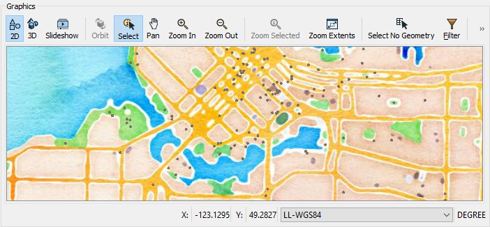

After completing this unit, you’ll be able to:
Continuing with his workspace, Sven clicks View Written Data on the PublicArt writer feature type to open the geodatabase in Visual Preview.
Sven can view the data now, but it is displayed without much context. He wants to get a general sense of where the most art installations are located. He knows from experience that viewing his data with a background map can help with this task. In general, Sven likes to add a background map to spatial data when he wants to:
To add a background map to Visual Preview, Sven right-clicks on the Graphics View pane and selects Background Map > Switch to new background map…

He sees many background map services available under the Source dropdown menu. Sven selects Stamen Maps because it is the only provider that does not require an account. For Map, Sven clicks the ellipsis [...] button to load the options and selects “terrain”.Then he clicks OK followed by Save.
The background map appears in the Graphics View. Sven can quickly tell that it appears the majority of art installations are located in the Downtown neighborhood, the central and northern area displayed below.

Map tiles by Stamen Design, under CC BY 3.0. Data by OpenStreetMap, under CC BY SA.
In the FME Workbench menu bar, use Tools > FME Options > Background Maps (or FME Workbench > Preferences > Background Maps on a Mac) to swap to a different Stamen Maps background map using the “watercolor” layer instead of the “terrain” layer. Your map should look like this:

Map tiles by Stamen Design, under CC BY 3.0. Data by OpenStreetMap, under CC BY SA.
Next, try using the View Source Data button on the Mount Pleasant reader feature type and take note of the number of features it contains.